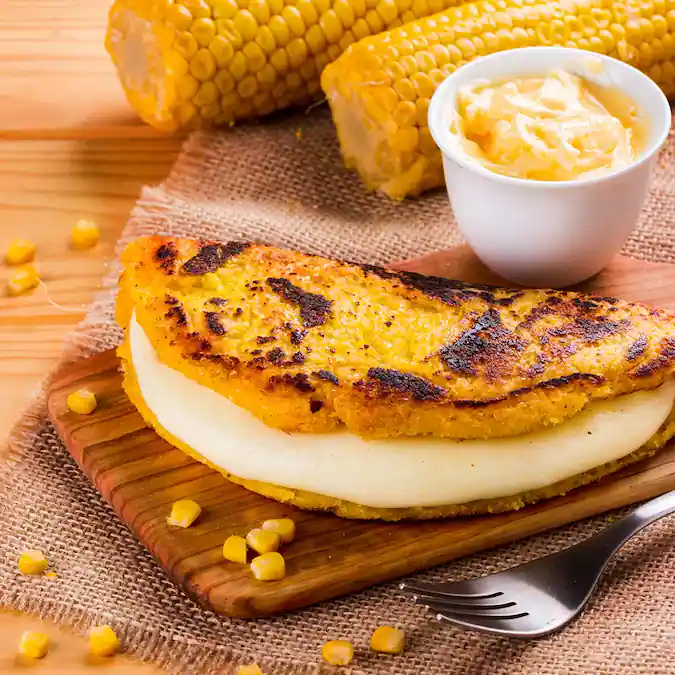

Empanadita de carne mechada
En el Archivo de Indias de Sevilla se encuentra un diccionario de la lengua chaima en donde registran la palabra indígena “kachapa” para designar una especie de arepa dulce preparada por los chaimas, siendo el mismo alimento actual pero sin leche y sin agregados "criollos" venezolanos, era uno de los alimentos sagrados de dicha etnia, siendo un icono de la tribu.También se han registrado preparaciones similares en Costa Rica desde la época de la colonia española No se debe confundir con la cachapa de hoja, que consiste en un panecillo de maíz con forma de bollo envuelto en la hoja de la mazorca.La cachapa también es utilizada para aludir a las lesbianas designadas despectivamente cachaperas